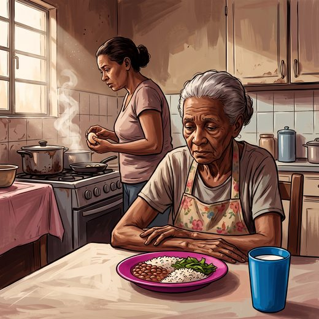

Consulta rápida à beira do leito
Condutas, doses e interações.
Referências da aula · 6
- Volkert D, Beck AM, Cederholm T, et al. ESPEN practical guideline: clinical nutrition and hydration in geriatrics. Clin Nutr. 2022;41(4):958-89. PMID 35306388.PubMed
- Bauer J, Biolo G, Cederholm T, et al. Evidence-based recommendations for optimal dietary protein intake in older people: a position paper from the PROT-AGE Study Group. J Am Med Dir Assoc. 2013;14(8):542-59. PMID 23867520.PubMed
- Kenney WL, Chiu P. Influence of age on thirst and fluid intake. Med Sci Sports Exerc. 2001;33(9):1524-32. PMID 11528342.PubMed
- Ross AC, Manson JE, Abrams SA, et al. The 2011 report on dietary reference intakes for calcium and vitamin D from the Institute of Medicine: what clinicians need to know. J Clin Endocrinol Metab. 2011;96(1):53-8. PMID 21118827. doi:10.1210/jc.2010-2704.PubMedDOI
- Kaiser MJ, Bauer JM, Ramsch C, et al. Validation of the Mini Nutritional Assessment short-form (MNA-SF): a practical tool for identification of nutritional status. J Nutr Health Aging. 2009;13(9):782-8. PMID 19812868. doi:10.1007/s12603-009-0214-7.PubMedDOI
- Freitas EV, Py L, organizadores. Tratado de Geriatria e Gerontologia. 5ª ed. Rio de Janeiro: Guanabara Koogan; 2022.
Documentos oficiais
Leis e publicações do Ministério da Saúde sobre o cuidado da pessoa idosa, de acesso livre.
Abrir os documentos